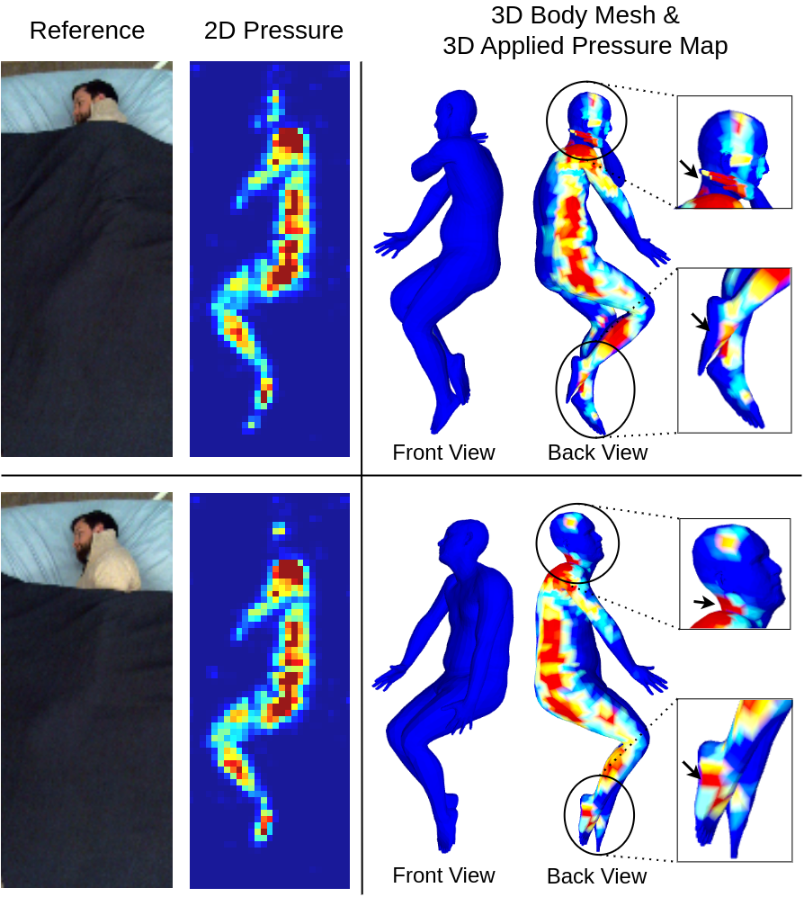
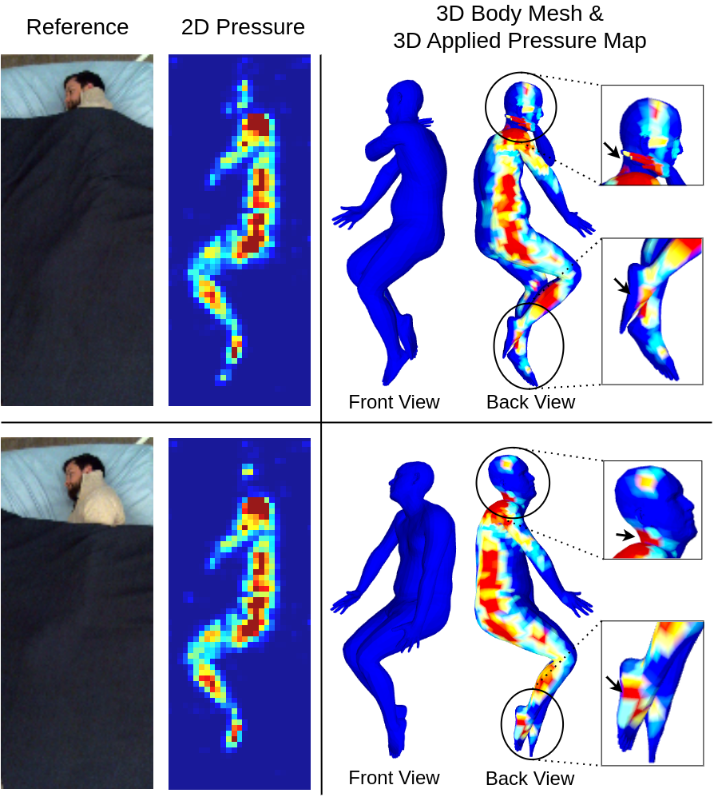
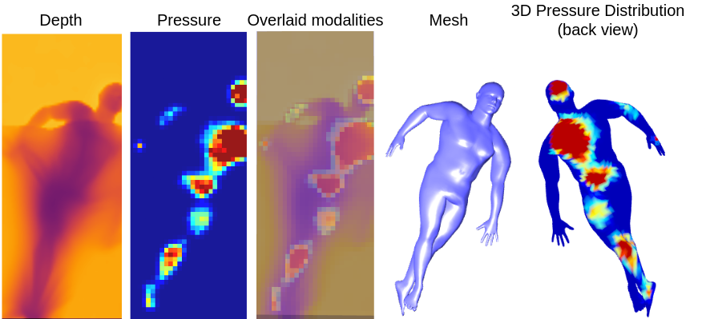

2D Pressure is insufficient
Distinct postures can have similar 2D pressure images. The insets of the 3D pressure map show pressure being applied to different areas demonstrating its use in localizing pressure that is applied on the human body.
Distinct postures can have similar 2D pressure images. The insets of the 3D pressure map show pressure being applied to different areas demonstrating its use in localizing pressure that is applied on the human body.
Depth and pressure image complement each other. Image of overlaid modalities depicts the enhanced context available to the model.

@article{ #TODO ,
author = {Tandon*, Abhishek and Goyal*, Anujraaj and Clever, Henry and Erickson, Zackory},
title = {BodyMAP - Jointly Predicting Body Mesh and 3D Applied Pressure Map for People in Bed},
journal = {CVPR},
year = {2024},
}